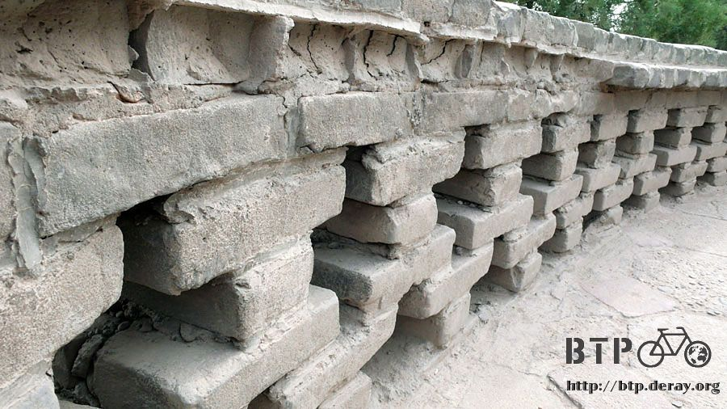

The wind sang me songs
After I spend 3 MCY(Chinese dollar) for a map from a newspaper stand. Suddenly, find out there are many places to hang out.
When I move out from Beijing, I took a long way. Unknowing, I am paddled back to a city by the yellow river again.
Lanzhou city and yellow river feels like Paris and La Seine.
They both had a great river running through their city.
In Paris, you can see all kinds of coffee shop, artist, little shop and tourist by the La Seine river.

You can also see a lot of shops in Lanzhou city but, the river side shop was selling beer instead.
Not too many tourist if compare to La Seine but, there is some very interesting little shops.
Including someone carrying a scale and gives your weight and height than ask for 50 Chinese cent.
I try to reach the rail station when I first got this map.
I was lost, right away. In fact, there are three rail stations over here.
They are Lanzhou east, Lanzhou and Lanzhou west rail station. I went to the East station which near by.
But, I can not find any road to pass the rail track.
So, I follow the locals pushing my bike walking up and down on those little hills of coal, taking my bike walking on the rail road track.
Finally, I went to the other side of rail track but, where is the station?
It turn out, this station was only a place for loading cargoes from those factory near by.
There are so many factories around this area, especially "armory".
This rail station is a rail station with out any platform.
The real Lanzhou rail station was sitting along by the hill side.
It creates a grand view of that station. I start my tour today form here.
I skip the idea of taking one day visited of Lanzhou University. Because, there are so many university was called Lanzhou University.

Today's plan is going to visited "the number one bridge" on Yellow river.
(sounds like it's the first bridge built on Yellow river)
It is a iron construction which only allow people and bike passing through.
There are people selling photo service and showing their hand full of pictures as an example.
You can get away with that by showing your own camera in your hand.
The other side of Yellow river, I found a park which can let people walk into the water.
There is a shop keeper tells me that bike is not allow to ride inside when I go in to the park.
They will take care of my bike if I leave my bike over there.
I was thinking to myself, how nice of these guy, it turn out that they charge for bike keeping.
It's only three Chinese cents. Well, never mind!

I found a stair way lead me directly go into the river when I go near to the river bank.
Take off my shoes and socks, stepping in to the cold river water.
It's more than cold. Actually, it is freezing.
I can not put my feet in the water over ten seconds, without turning red and hurt like stinging.

The Yellow river looks clean. Maybe, it's still on the upper part of the river and did not being contaminated by those factories.
In my life, this is the first time I reach Yellow river.
Can't believed how freezing the water is and wondering if the fish was frozen under the water.

After I touch the Yellow river, my first goal was done.
Now, I'm moving toward to my second goal. "Yellow river beer" 3 Chinese dollars and fifty cents a bottle.
It's a little too much but, it's OK! There are people playing Chinese chess when I sit down by the river side.
It's a very interesting game to watch. They are competing with each party's opinion instead of their skill.
It does not matter who is playing better. But, it seems matter that got bigger cheer squad.
As I enjoy the game. Suddenly, I cry out "move the knight" and joint the battle.
It's really interesting. Because you don't have to be responsible to what you said.
The guy who was playing took all the blame.
Lanzhou got their own beer factory which produces lots of beer.
You can see that everyone keeps drinking.
It generated a German beer festival's kind of feeling that make you believed the beer was free of charge, but, in fact those beer cost you money. ORZ
When I go to the main street, there is a plaza with over a thousand seats and there are all kinds of food stand.
Any barbecue food stand was always busy. There are people chatting and some others playing card over that area.
No matter what they do. One thing for sure, everyone enjoy their beer.
On the other hand, I feel surprised about those Muslim restaurants around the plaza.
They can not drink beer. But, they run their restaurant with lots of people drinking.
Its must be a big trial to their religious code.
Leaving the river side and heading to downtown area. Lanzhou feels no smaller than Taipei.
According to the map, there are six to seven movie theaters.
The price of a movie starts from ten to fifteen Chinese dollars.
Originally, I plan to watch "Spiderman III". However, considering the translation and they change the voice over into Chinese,
makes I fall in to an irreconcilable conflict. I really don't like this Mandarin voice over idea~
Lanzhou city was also known as the capital of fruits.
This city got its reputation of growing all kind of fruits, like water melon, Bailan melon, cherry, peaches, Litchi and all other fruits.
I start drooling, every time I stand in front of fruit stand.
They let try every kind of fruits except big melon.
The boss says with pride:" How about that? Very sweet, right! All these fruits were grown locally in Lanzhou.
The best fruits you can find". It was great but, making me more confused what I want to buy.
Finally, I decided to buy Bailan melon. They charge five Chinese dollars per kilogram.
I spend nine Chinese dollars to have two and ask the boss cut one open for me to have it there.
This melon is slightly bigger than musk melon. It got this oval shape and tasted like Hami melon.
The meat was harder than Hami melon but, softer than musk melon. Anyway, it’s a sweet and tasty fruit.
I went into the freezing Yellow river water, try the local beer on the river side, tasted the Bailan melon.
All of my three goals were completed.
I came back to the inn and settle down my bicycle.
I take a bus to hang-out in Baitar Hill Park. I did not plan to visit this place.
I did not know its existence before this trip. It was the trip on the bridge over Yellow river.
I saw this place with many temple style building. Well, you can say that is common in China but, it also very beautiful.
I did do my home work and find out the ticket cost 6 Chinese dollars but, no bikes allow entering.
It's affordable, so I decided to take a bus and visited this spot.

On the map of Lanzhou city, there is a brief of Baitar temple.
It is built along the hill and the temple was located on the top of that hill which is 1700 kilometer above sea level.
Its 200 meters higher than Lanzhou city, so, you can see the entire Lanzuou city from the hill top.
I found out the bricks was made from mud when walking on the stairs.

It's very fragile and you can break it easily if you push hard.
80% of the bricks were marks with someone's name.
It's amazing and also very sad. Every where was marked, even some place in the temple surround with fence.
Seems that want to leave their name behind. They did not treasure this beautiful place.
Chinese temple got its own style. Usually, you can see animal sculpture carved from jade, lineup on top of the roof and the eaves.

Baitar temple is small. It looks like the shape of a bowling pin and only 17 meters high.
It was built in Yuan dynasty, 1228 AC., About 800 years before now.
This temple was built in memory of a lama. The building had 7 stories and 8 sides with wind chimes.
It jingles when the breeze went through.
It's Tuesday when I visit the temple and not much tourist around.
I only met a gentleman came from NanJing ask me to take a photo of him and the tower, over this quiet afternoon.
I was sitting down on the stairway, listening to the music play by the breeze.
I felt very much peaceful to my heart.
The sounds of wind chimes seem came from the sky or, go in to the deepest part of who is listening.

I walk down from the hill and the wind blowing some unknown leaves and petals all around.
Some flower still standing there and swinging with the wind. Some flower lost few petals, take away by the wind, high up in the sky.
Finally, they fall down and joint the carpet of leaves and flowers.
I stay longer than I expect when visiting this temple on the hill.
At first, I just want to see the city from a top view but, the beautiful sight and the smooth atmosphere seized me.

As far as I go to north-west, the Sun light stays longer.
It's been 8 o'clock in the afternoon but, the sky still bright.
I decided to walk back to my hotel, instead of taking the bus. It might take one hour on foot.
Even I am not familiar with Lanzhou city. But, today's trip gives me a wonderful memory of Lanzhou city.
I feel great that I spend one day hanging around in this city.
Gansu and Lanzhou is very much the same, the city got this long and slim shape.
I start up from south-east which cities were busy.
As I go further more into north-west, rainfall disappear quickly. The desert which I am expecting is not far from here~